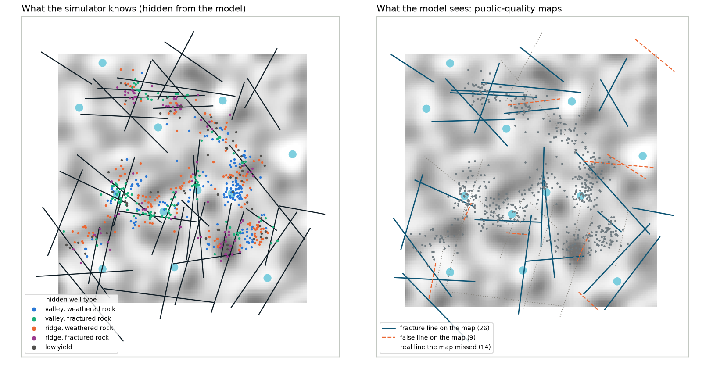

Stage 2 · Terrain and maps · Simulated test world: 579 wells, two datasets
What maps can and can't tell us about a well.
In the simulated city, terrain decides what kind of well you have: valley or ridge, weathered or fractured rock. The model never sees that. It gets imperfect maps, like the ones freely available for Bengaluru, and uses them only for a starting guess about each well, which the well's own data then corrects.
The maps the model saw
Left: the simulator's true terrain, fracture lines and the hidden type of each well. Right: the degraded maps given to the model. Shading is elevation, darker is higher; blue discs are lakes.

Dataset A. On the right, dark blue lines are real fracture lines as mapped (shifted and shortened), dashed orange lines are false lines, dotted grey lines are real ones the map missed. The model sees neither the dotted lines nor the well types.
| Map layer | What the model gets | How it was degraded |
|---|---|---|
| Elevation | a 140 × 140 grid, 0.2 km cells | error of about 2 m, correlated over ~1 km, plus up to 4 m of roofs where the ground is paved, as a satellite surface model sees them |
| Fracture lines | line segments | 30–80 % of real lines mapped (longer ones more often), each shifted about 0.2 km, turned by a few degrees and shortened; false lines added, on average a quarter as many (A: 26 of 40 plus 9 false; B: 20 of 35 plus 1 false) |
| Paved share | a grid | error of about ±0.05, correlated over ~1 km |
| Storm drains | a grid of valley floors | about 15 % left off the map, in patches |
| Lakes, zones | centres, administrative zones | exact, as in real maps |
From these, each well gets 13 terrain features: elevation; how far it sits above or below its surroundings within 0.5, 1.5 and 3 km; slope; distance to the nearest mapped fracture line and the length of mapped lines within 1 km; distance to the nearest lake; a mapped drain within 300 m; paved share at the well and within 1 km; its zone; and its distance to the city centre.
Wells the model was never fitted on
For 116 wells with no fitted settings, a terrain-based start beats a fleet-average start from about a month ahead; at twelve weeks it is 11 % better on A and 8 % on B.
Average error against the true weekly level, metres
Show the numbers as a table
These wells still use their own readings to know where the water is today; what terrain supplies is how they respond: to rain, to pumping, over the season. For the nowcast the fleet-average start is marginally better (0.45 m against 0.48 m on A).
How much of each well setting terrain can predict
Terrain explains at most a quarter of any one setting, and most of them hardly at all. It is a starting guess, not a substitute for data.
Share of the variation between wells explained by terrain, on wells held out of each fit (0 = none)
Why so little: the settings are fitted one by one from noisy readings, several of them trade off against each other (the four rain delays especially), and the maps are imperfect. Predicting whole behaviours, such as how far the level rises a month after 100 mm of rain, rather than individual settings, is the next thing to try.
For real wells
The maps exist
- Elevation: Copernicus 30 m, or CartoDEM from ISRO's Bhuvan portal.
- Paved and built-up area: ESA WorldCover and the Global Human Settlement Layer.
- Fracture lines: the geomorphology and lineament maps on Bhuvan and from the Geological Survey of India.
- Lakes and drains: OpenStreetMap and the state lake inventory.
- Aquifers: the Central Ground Water Board's aquifer mapping report for Bengaluru.
The wells' locations don't, yet
The vendor's files identify wells only by an anonymous code. Three ways to connect them to the maps without exposing an address, easiest first:
- The data holder runs our script on the true locations and returns only the 13 terrain values per anonymous well.
- Locations rounded to about 250 m: enough for terrain and for wells affecting each other.
- Ward or PIN code only: paved share and rough elevation, not fracture lines.
Shifting every location by one secret offset keeps distances between wells but puts every well on the wrong spot of the map, so it doesn't work for terrain.
Today paved share, drains and lakes only shape each well's starting guess; rain soaks in through learned delays. The next version would give rain an explicit path: less water in where the ground is paved, a soil store that dries out, harvesting pits and drains that route water down. It has to be simpler than the simulator's own recipe, and it has to hold up on dataset B and real data, so the test stays honest.